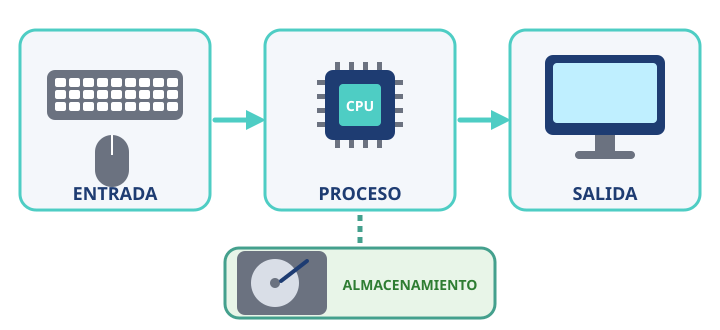

Módulo 1: ¿Qué es un ordenador?
Una máquina que recibe datos, los procesa y te devuelve un resultado.
Informática básica · Módulo 1 de 12
Una máquina que sigue instrucciones
Un ordenador es una máquina electrónica que recibe datos, los procesa siguiendo instrucciones (programas) y devuelve un resultado. No piensa por sí mismo: hace exactamente lo que le dicen los programas, pero a una velocidad enorme.

El ciclo de cualquier ordenador: entrada → proceso → salida, guardando lo necesario en el almacenamiento.
El ciclo, con un ejemplo
⌨️ Escribes un mensaje (entrada)
➜🧠 El procesador lo prepara (proceso)
➜📱 Aparece en la pantalla (salida)
➜💾 Se guarda en el chat (almacenamiento)
Hay ordenadores por todas partes
🖥️
SobremesaPotente y ampliable; no se mueve de la mesa.💻
PortátilTodo en uno con batería; para llevar.📱
Móvil y tabletOrdenadores de bolsillo con pantalla táctil.🎮
ConsolaOrdenador especializado en juegos.⌚
Reloj inteligentePequeño, con sensores.🚗
IntegradosEn coches, lavadoras o semáforos.Dos palabras clave: el hardware es todo lo que puedes tocar (piezas y aparatos) y el software son los programas y datos que lo hacen funcionar. Los verás a fondo en los próximos módulos.
🧩 Haces una foto con el móvil. ¿Qué parte del ciclo es pulsar el botón de la cámara?
🧩 ¿Cuál de estos aparatos también es un ordenador?
✍️ Actividad: ordenadores a tu alrededor
Haz una lista de 5 aparatos de tu casa que lleven un ordenador dentro. Para cada uno, indica cuál es su entrada y su salida.
Resumen: un ordenador recibe datos (entrada), los procesa, muestra resultados (salida) y guarda información (almacenamiento).